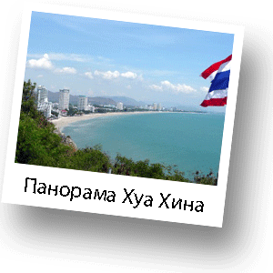
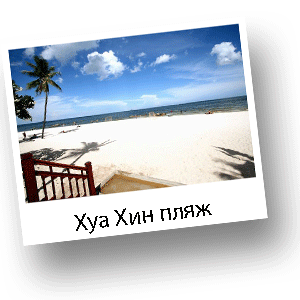
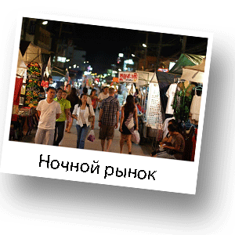

Хуа Хин

Хуа Хин - известный старейший морской курорт Таиланда. Находится Хуа Хин на противоположной от шумной Пттайи стороне залива и находится на расстоянии 200 км. от Бангкока. Раньше это был маленький рыбацкий порт, получивший Королевские отличия в 1920году, когда Король Рама VII выбрал это место для летнего дворца, который он назвал "Клай Кангвон", имея в виду "Далеко от Беспокойств" - показатель атмосферы отдыха в Хуа Хине. Популярность таким образом состоялась. Хуа Хин сделался курортом для элиты Бангкокского общества, статусом его стали соревнования по 18-ти луночному курсу гольфа.

Сегодня Королевская семья продолжает проводить часть года в Хуа Хине, в то же самое время курорт получил широкую популярность среди иностранных туристов. Несмотря на быстрое движение вперед, предлагая все современные возможности, Хуа Хин сохранил собственную тайскую традиционность. Хуа-Хин также знаменит привлекательным пляжем, который отделен с одной стороны от рыбацкой деревушки каменными выступами, красиво изгибающимися на протяжении трех километров к ее южной точке, где Буддийские храмы цепляются за утесы. Вдоль берега расположено множество отелей, начиная от роскошных, с полным набором удобств и приятными развлечениями до недорогих, но комфортабельных бунгало.

В дополнение к аттракционам на солнце, море и песке, Хуа Хин обеспечивает время досуга за пределом пляжа. Особенно это относится к работающему в ночное время рынку. Лучшими покупками дня посвященных специалистов по шоппингу является местная продукция высококачественного шелка и хлопка, а также региональные знаменитые засушенные морепродукты и тайские сладости. Для более активного отдыха Хуа Хин славится старейшим Тайским гольф-клубом на прекрасных ландшафтах тропической зелени. Курсы для гольфа, соответствуют международным стандартам.